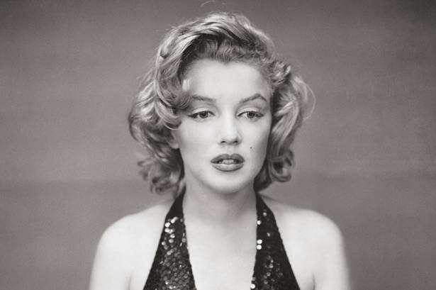

MARILYN MONROE'S
EARLY TO LATE LIFE
On June 1, 1962, Mailyn Monroe was born in Los Angeles, California. At birth, Monroe was given the
name Norma Jeane Mortenson (she was baptized as Baker Jeane Baker later on). Monroe was raised mostly in foster
care and an orphanage, while her mother Gladys Pearl Baker was frequently institutionalized. Monroe was raised
in an orphanage for a while as well as by twelve different sets of foster parents.
Monroe was unaware of her father.
She once believed Clark Gable to be her father; this is a story that has been told frequently enough to become somewhat
well-known. Nevertheless, there's no proof that Gable was acquainted with or ever met Monroe's mother.
Monroe was cared
for for a few years in 1937 by a family friend and her husband, Grace and Doc Goddard. Monroe's mother paid the
Goddards $25 a week to raise her.
Monroe was not permitted to go to the movies, among other forbidden activities,
because the couple was fervently religious and adhered to fundamentalist beliefs. However, the couple could not
afford to take Monroe with them when Goddard's work was moved to the East Coast.

Monroe was sexually assaulted multiple times while living in foster homes when she was seven years old.
She subsequently claimed to have been raped when she was eleven years old. When she was fifteen, she left high school.
Monroe saw marriage as a means of escape, and at the age of sixteen, she married Jimmy Dougherty, a merchant marine,
in 1942. However, their marriage ended in divorce shortly after World War II.

On August 5, 1962, after midnight, Monroe's maid Eunice Murray saw that the light in her bedroom was on.
Upon discovering that Marilyn was not answering her calls and that the door was locked, Murray contacted Dr. Ralph
Greenson, the psychiatrist for Monroe, who broke a window to enter the room. After going inside and discovering
Marilyn dead, he called the police. Following an autopsy, it was determined that she had taken a lethal dose of
sedatives, and her death was likely suicide. The time of her death was on August 5, 1962 of the late evening.
Many conspiracy theories concerning her death have surfaced in recent decades; the majority of them claim that she
was killed by John and/or Robert Kennedy, with whom she supposedly had romantic relationships.
According to these theories, she was killed—or had killed—by the Kennedys out of fear that she would reveal
their love lives and other government secrets that she was collecting. Robert Kennedy was actually in Los Angeles
on August 4, 1962, while serving as his older brother's cabinet's attorney general.
The veracity of these and other
claims made by Monroe's housekeeper Eunice Murray is in doubt. Twenty years after the incident, Murray made her
first public announcement that the attorney general had visited Marilyn on the evening of her death and argued
with her.
Even after her passing, Marilyn Monroe is still a significant cultural figure.